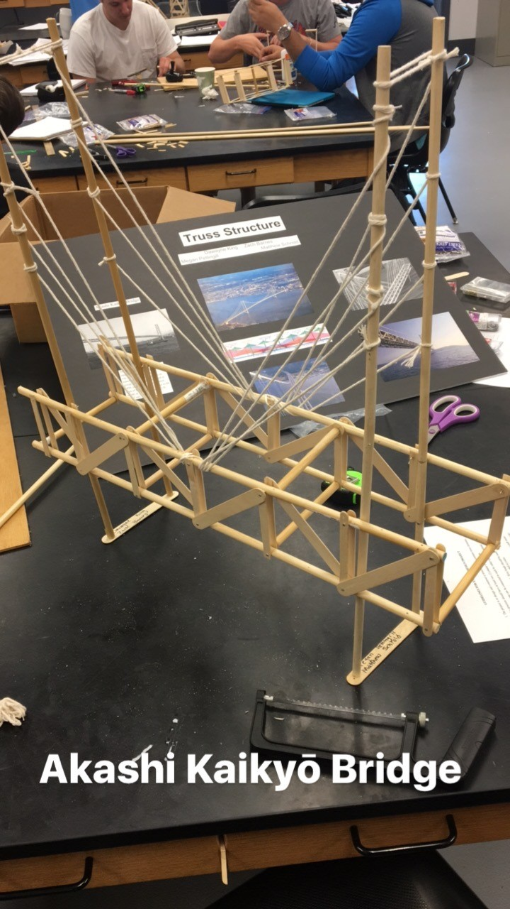
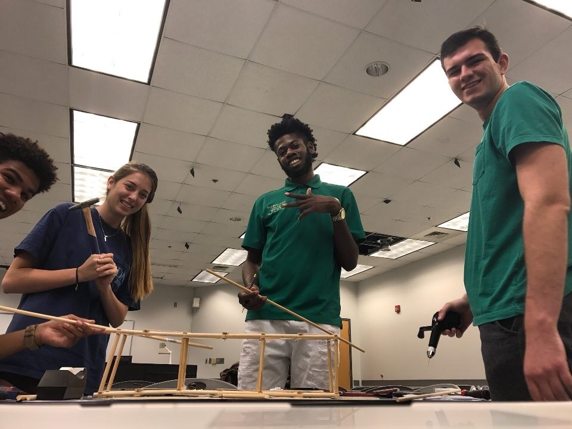

Akashi Kaiakyo Bridge
Engineering Drawings
In this section, you can view images from a project from my Engineering Mechanics - Statics Course, in which three classmates and I constructed a model of the Akashi Kaiakyo Bridge. This was an actual design, which was created with pop cycle sticks, nails and other pieces - and required the usage of saws, simple power tools, and research done to create a simple scale model. We implemented concepts and had hands on experience with identifying the role of statics, and materials in engineering; and showed distributed loading through force and structural analysis.

